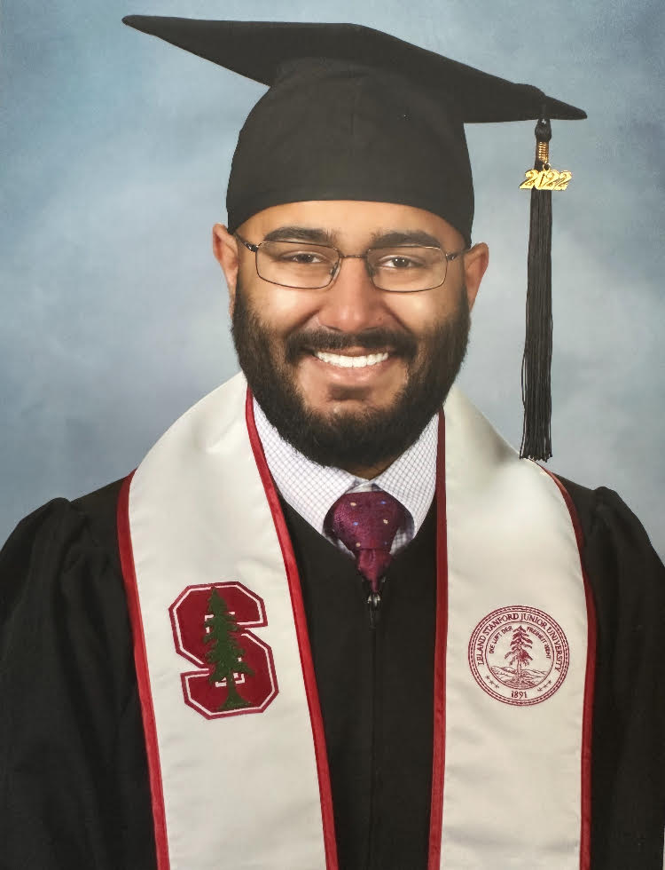
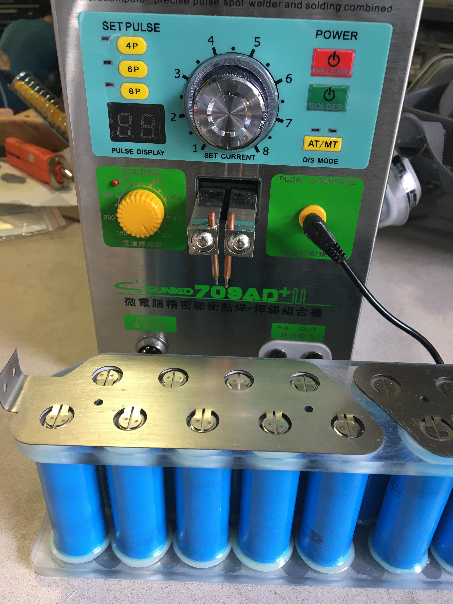
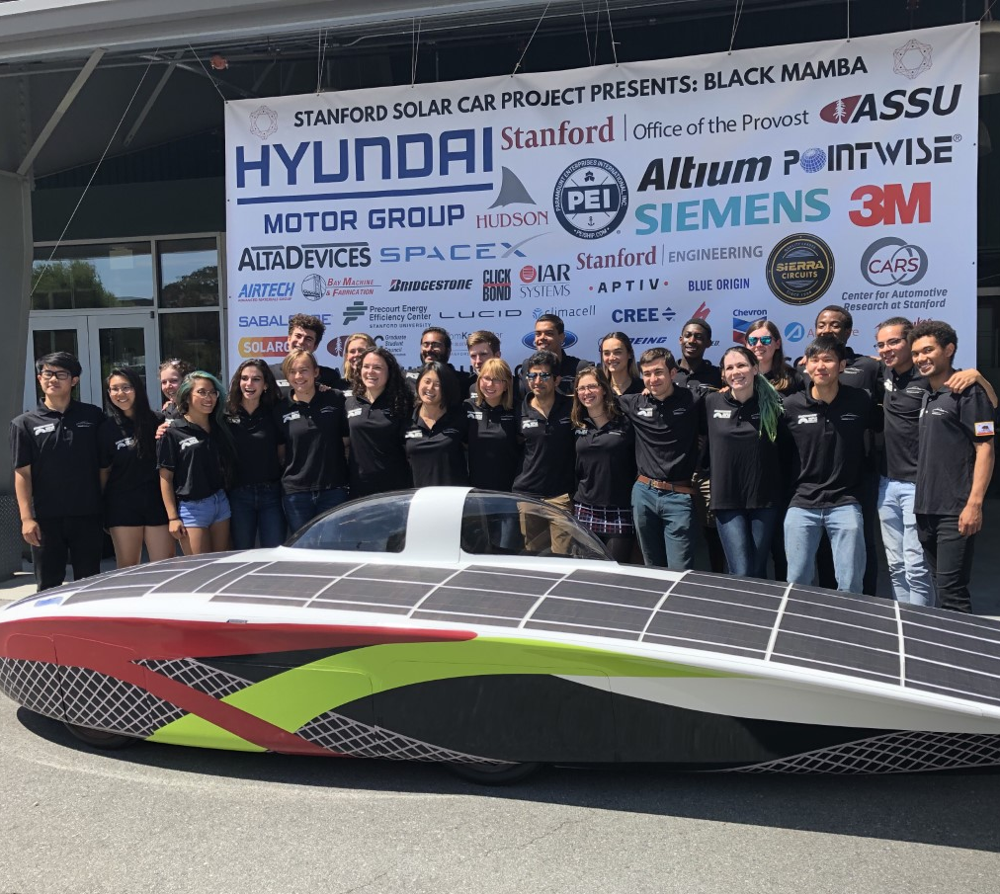

About Me
Education
I studied mechanical engineering at Stanford University, conferring both my B.S. and M.S. in January 2023. My undergraduate mechanical engineering concentration was in control systems and my graduate depth was in mechatronics. Between my undergraduate concentration and my graduate depth, I completed coursework in vehicle dynamics and control, haptics, soft robotics, and PIC32 systems/general mechatronics. In addition to control systems and mechatronics coursework, I took courses in compressible flow and turbomachinery, computer-aided design and CNC machining, fatigue design and analysis, parametric structure design, and engineering optimization.


Professional and Research Experience
I've held several intern and research positions over my student career. I interned at Spark Thermionics in summer of 2020, during which time I conducted CFD simulations to characterize temperature in their thermionic devices and built a cooling extension into a sealed inert gas test chamber. I also held a summer/autumn intern position at Neptune Medical in 2022, in which I created small-scale hardware to aid in custom manufacturing processes and manufactured a control box to help automate those processes. I've also worked on projects for the Stanford Solar Car Project under the Stanford Mechanical Engineering Department's SURI program. These projects included components of the steering and brakes systems, small- and large-scale composite layups, and EV battery pack design.
World Solar Challenge
In 2019, I competed in the Bridgestone World Solar Challenge as part of the Stanford Solar Car Project's race crew. As a race crew member, I conducted maintenance on the vehicle, worked on vehicle tests both on the track and on the highway, and manufactured replacement parts on benchtop mills and lathes as needed. Though the SSCP team did not complete the WSC race, we drove our vehicle over 2,000 kilometers in testing and gained valuable field engineering and maintenance experience.
